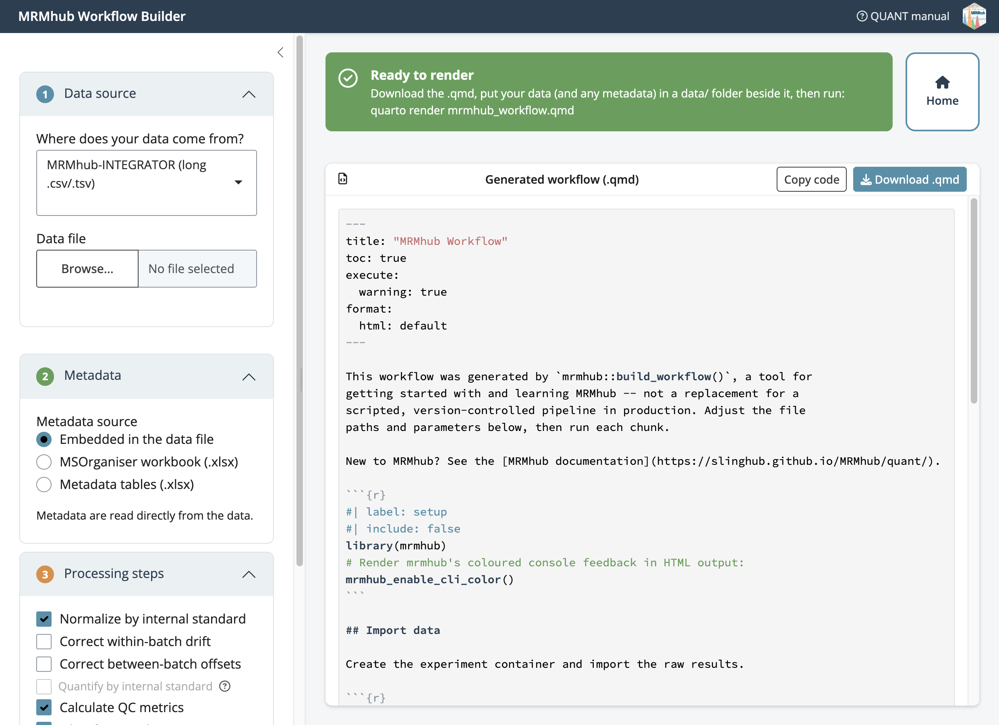

Build a workflow without code
Source:vignettes/articles/tutorial-12-workflow-builder.Rmd
tutorial-12-workflow-builder.Rmdbuild_workflow() opens a point-and-click app that turns
a data file and its metadata into a runnable Quarto (.qmd)
workflow. You fill in the sidebar, the app checks your inputs, and it
writes the same script you would otherwise type by hand.

Steps
-
Start the app. Run
build_workflow(); it opens in your browser. To try it with no files of your own, click Load bundled demo data. 1 · Data source — pick the tool or format that produced your data and upload the file. For a generic CSV, click Configure columns… to map them.
2 · Metadata — choose where sample, feature, and ISTD annotations come from (embedded in the data file, an MSOrganiser workbook, or separate files).
3 · Project folder — optionally Browse… to a folder; the app copies your data in and writes the report there. Leave it empty to just download the
.qmd.4 · Processing steps — tick the steps to include. A greyed-out step tells you what metadata it still needs (e.g. Quantify by internal standard stays off until an ISTD concentration table is imported).
5 · Output formats — choose HTML, Word, or PDF for the rendered report.
Check the Validation panel. A green ✓ means the workflow will run; ✗ and ⚠ point to what is missing or out of order.
-
Save it. Click Download .qmd (or Create project & write .qmd), then render:
The result is an ordinary Quarto document. Open it in RStudio, Positron, or VS Code, tweak paths or steps, and run the chunks yourself — the builder is a starting point, not a black box.
Next steps
- Your first analysis: the same workflow written by hand
- Basic MRMhub workflow: the full pipeline the builder mirrors
- Quarto workflows: rendering to HTML, PDF, and Word